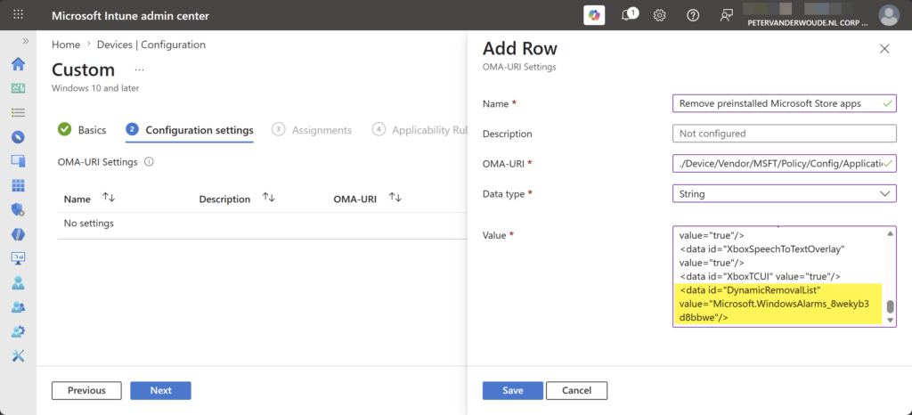
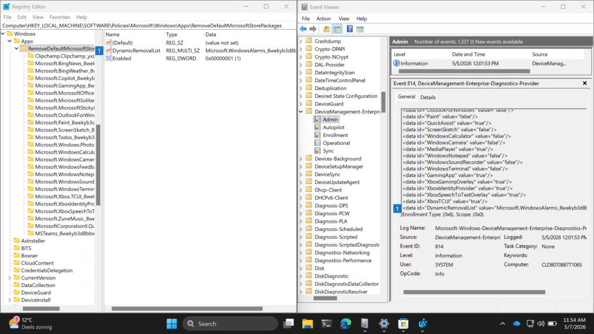

This week is all about a really nice addition to the native functionality to remove preinstalled Microsoft Store apps. That nice addition is the ability to dynamically remove any preinstalled MSIX/APPX app, which builds on the functionality described earlier about removing preinstalled Microsoft Store apps using native functionality. The story around removing those apps is still the same. When working with Windows devices in an enterprise environment, a common request is to control the preinstalled Microsoft Store apps. These default apps, which ship as part of the Windows image, often include consumer-oriented or redundant functionality that does not align with corporate standards. That makes removing often desirable. Removing these apps often required custom scripting, or other creative solutions. Starting with Windows 11 version 24H2, however, there is native functionality available to facilitate the removal of preinstalled Microsoft Store apps. And that functionality now contains the addition to dynamically remove any preinstalled MSIX/APPX app by referencing the Package Family Name (PFN), unless the app is considered a system app. That enables the IT administrator to easily remove any preinstalled Microsoft Store apps. This post will provide a closer look at this added functionality and how it can be utilized by using Microsoft Intune.
Important: The removal of preinstalled Microsoft Store apps with native functionality is now extended to Windows 11, version 24H2 and later. And still only for the Enterprise and Education editions.
Configuring the removal of preinstalled Microsoft Store apps
When looking at the configuration for the dynamic removal of preinstalled Microsoft Store apps, using Microsoft Intune, it all still starts with the Policy CSP. That CSP contains the ApplicationManagement node, which contains the ADMX-backed settings that can be used for configuring application management related settings, including the setting to remove the preinstalled Microsoft Store apps. For that, the RemoveDefaultMicrosoftStorePackages setting can be used, and that setting is backed by the AppxPackageManager.admx. That is an existing setting that got enhanced with the additional functionality to dynamically remove apps. As input that setting expects an XML that contains elements for the installation value of the different preinstalled Microsoft Store apps. That on itself is also nothing new, but that XML now also contains an additional element for a dynamic list of apps. That list can contain any preinstalled MSIX/APPX app, by simply referencing the PFN. To find the PFN, the Get-AppxPackage cmdlet can be used. Below is an example for the Windows Alarms app.
Get-AppxPackage *Alarms* | Select-Object PackageFamilyNameTogether with the already existing elements that should result into an XML-file as shown below. It enables the setting and configures the state of the apps, and on top of that the DynamicRemovalList element removes any apps that are specified as value in the list. To prevent error messages, the XML-file should contain all the apps that are configurable via the setting.
<enabled/>
<data id="WindowsFeedbackHub" value="false"/>
<data id="MicrosoftOfficeHub" value="false"/>
<data id="Clipchamp" value="false"/>
<data id="Copilot" value="false"/>
<data id="BingNews" value="true"/>
<data id="Photos" value="false"/>
<data id="MicrosoftSolitaireCollection" value="true"/>
<data id="MicrosoftStickyNotes" value="true"/>
<data id="MSTeams" value="false"/>
<data id="Todo" value="false"/>
<data id="BingWeather" value="true"/>
<data id="OutlookForWindows" value="false"/>
<data id="Paint" value="false"/>
<data id="QuickAssist" value="true"/>
<data id="ScreenSketch" value="false"/>
<data id="WindowsCalculator" value="false"/>
<data id="WindowsCamera" value="false"/>
<data id="MediaPlayer" value="true"/>
<data id="WindowsNotepad" value="false"/>
<data id="WindowsSoundRecorder" value="false"/>
<data id="WindowsTerminal" value="false"/>
<data id="GamingApp" value="true"/>
<data id="XboxGamingOverlay" value="true"/>
<data id="XboxIdentityProvider" value="true"/>
<data id="XboxSpeechToTextOverlay" value="true"/>
<data id="XboxTCUI" value="true"/>
<data id="DynamicRemovalList" value="Microsoft.YourPhone_8wekyb3d8bbwe"/>Note: For adding multiple apps to the dynamic removal list, use the HTML-encoded 
 between the apps.
At this moment this setting is already available as Remove default Microsoft Store packages from the system within the Settings Catalog. However, that setting does not yet contain the added functionality to dynamically remove any MSIX/APPX apps. That is the reason to still fallback to a Custom configuration profile. As it’s an ADMX-backed setting, the example XML is required to enable and configure the setting. The following nine steps walk through the configuration of removing the Windows Alarms app from Windows 11, version 24H2 and later, using the dynamic list.
- Open the Microsoft Intune admin center navigate to Devices > Windows > Configuration
- On the Windows | Configuration profiles blade, click Create > New policy
- On the Create a profile page, provide the following information and click Create
- Platform: Select Windows 10 and later as value
- Profile type: Select Templates as value
- Template name: Select Custom as value
- On the Basics page, provide a unique Name to distinguish the profile from other custom profiles and click Next
- On the Configuration settings page, as shown below in Figure 1, click Add to add the following row and click Next
- OMA-URI setting – This setting is used to remove the specified preinstalled Microsoft Store apps
- Name: Provide a name for the OMA-URI setting to distinguish it from other similar settings
- Description: (Optional) Provide a description for the OMA-URI setting to further differentiate settings
- OMA-URI: Specify ./Device/Vendor/MSFT/Policy/Config/ApplicationManagement/RemoveDefaultMicrosoftStorePackages
- Data type: Select String as value
- Value: Specify the previous XML-value as value to configure which Microsoft Store apps should be removed
{kind=link}

- On the Scope tags page, configure the applicable scopes and click Next
- On the Assignments page, configure the assignment for the required devices and click Next
- On the Applicability rules page, configure the applicability rules, and click Next
- On the Review + create page, verify the configuration and click Create
Note: Eventually the mentioned setting will be updated in the Settings Catalog to also configure the dynamic list.
Experiencing the dynamic removal of preinstalled Microsoft Store apps
After applying the configuration to dynamically remove preinstalled Microsoft Store apps, there are multiple methods to verify a successful configuration. But, before looking at the successful configuration, it is good to understand that the removal of the specified apps occurs at the sign in of the user, or during the device provisioning. Besides that, the configuration is always applicable to all the users on the device. For existing devices that means that the user has to sign out and sign on again to make the configuration take effect. After the removal of an app, the user can still try to install the app via the Microsoft Store. That will result in a message indicating that the action is blocked. The app, however, will show grayed out in the Start Menu. So, it is important to educated the users about the behavior when access to the Microsoft Store is allowed.
Technically, there are multiple methods for verifying a successful configuration. The AppxDeployment-Server event log contains the information about the removal of the apps and the DeviceManagement-Enterprise-Diagnostics-Provider event log contains the information about applying the configuration. That is actually interesting to look at, as shown below in Figure 2, as that also includes the information of the dynamic removal list. Eventually, the configuration will be written to the registry, as the configuration is ADMX-backed. That enables a pretty straightforward matching of the configuration. Below on the right is the configuration that is applied via Microsoft Intune and below on the left is the actual applied configuration. The number 1 highlights the configuration of the dynamic app removal list.
{kind=link}

Discover more from All about Microsoft Intune
Subscribe to get the latest posts sent to your email.